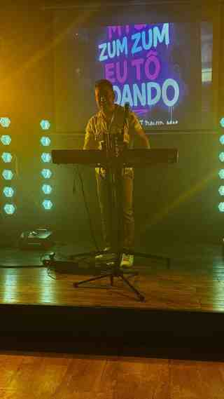

01
LIVE COMPACT
Voce + tastiera. Agile ed elegante per aperitivi, locali, ristoranti, dinner show e spazi culturali.

SHOW LIVE • ITALIA
Forró, musica brasiliana e latina in uno show costruito per coinvolgere il pubblico.
PROFILO ARTISTICO
Artista capixaba con oltre 17 anni di esperienza professionale in Brasile, oggi attivo in Italia.
Il repertorio nasce dal forró nordestino e si apre alla musica brasiliana e latina. Il punto forte è il contatto con il pubblico: ritmo, presenza scenica e una serata pensata per far partecipare le persone.

FORMATI DI SPETTACOLO

Voce + tastiera. Agile ed elegante per aperitivi, locali, ristoranti, dinner show e spazi culturali.
90–120 minuti di musica brasiliana, latina, forró e intrattenimento. Ideale per piazze, feste e festival.

Format culturale per Comuni, Pro Loco e associazioni: musica, identità e incontro tra Brasile e Italia.
LIVE EXPERIENCE
Presenza scenica, interazione e atmosfera brasiliana.
Uno show pensato per coinvolgere, far cantare e far ballare — dalle comunità brasiliane al pubblico internazionale.
RASSEGNA STAMPA
Rede Notícia, A Parresia, Portal Famosos Brasil e A Gazeta sono tra le testate che hanno raccontato la carriera, i brani e la crescita artistica.

CREDENZIALI
“Robertinho o Rei do Chinelado” — concessione 14/02/2023, validità fino al 14/02/2033.
Presenza tra gli artisti più ascoltati nello Stato di Espírito Santo, con brani nelle classifiche regionali.
Precedenti contratti con enti pubblici brasiliani, inclusa contratação per inexigibilidade pubblicata ufficialmente.
IDENTITÀ CULTURALE
Il calore del Brasile entra nello show attraverso i ritmi, il linguaggio del palco e i simboli più riconoscibili del Paese: il forró nordestino, Copacabana, il Cristo Redentor, il futebol e l’energia delle grandi feste.
BOOKING & CONTATTI
Disponibile in Italia per spettacoli, festival, eventi culturali, serate a tema brasiliano, locali e ristoranti.